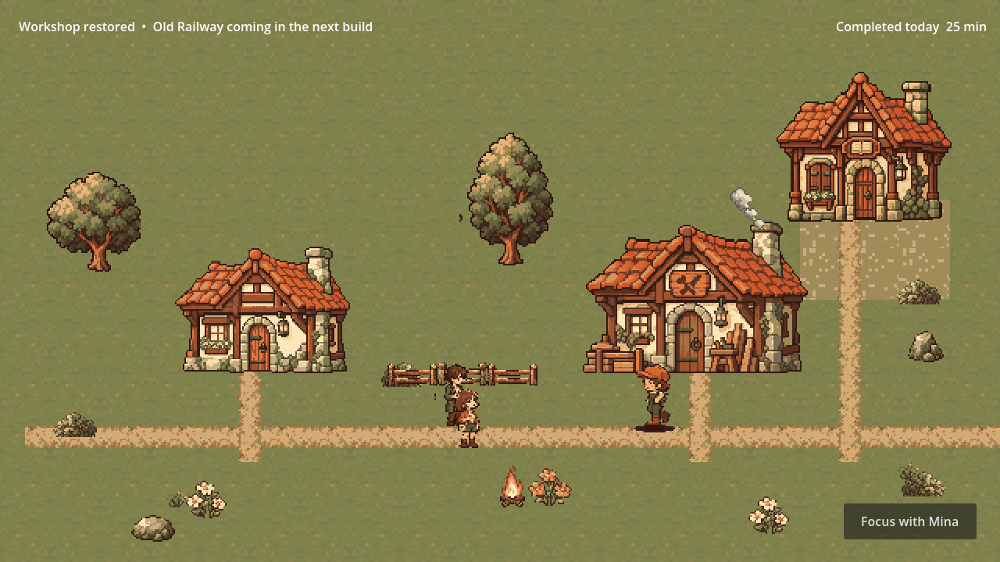
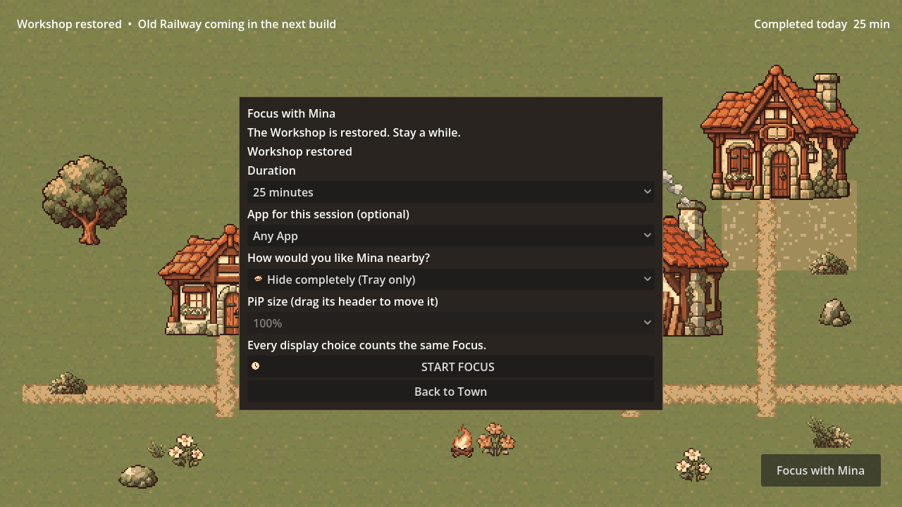
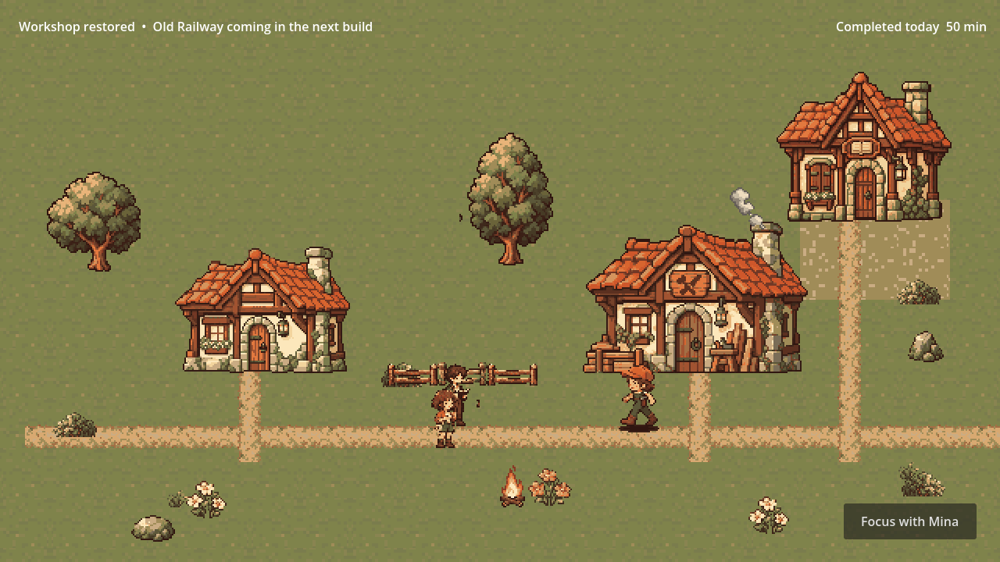

Workshop 이후에도 Mina와 Focus
2026-10-13 · 승인된 일상 Focus 확장
Workshop 완성·지도 확인 뒤 Focus with Mina로 세션을 이어갑니다. 기존 아트·음향·V1 저장을 사용하고 Workshop과 지도 보상은 반복되지 않습니다. 실제 Windows/Godot 게임 뷰 캡처이며 검증용 가짜 시계로 두 세션을 진행했습니다.

Workshop 복구·지도 확인 후: Focus with Mina가 열립니다. Railway는 다음 빌드 예고입니다.

기존 시간·앱·표시 모드를 유지합니다. 설정·보상·발견 패널의 표시 순서를 수정해 캐릭터가 버튼이나 글자를 가리지 않습니다.

두 번째 25분 완료 후 오늘 기록은 50분입니다. Workshop은 완성 상태이며 보상·지도 연출을 다시 표시하지 않습니다.
검사 범위 · 캡처 해시와 검사 기록